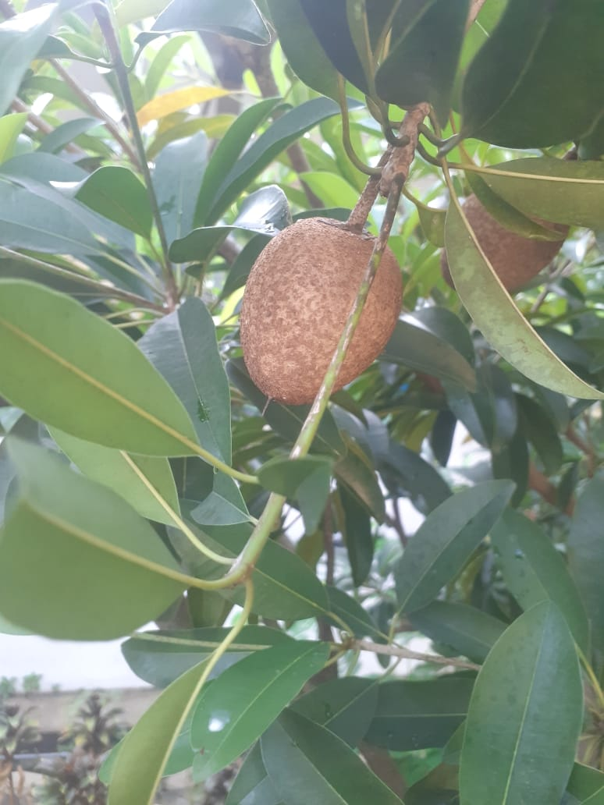

Tanaman Sawo Manila

Deskripsi
Sawo Manila adalah buah tropis berbentuk bulat hingga lonjong dengan kulit berwarna cokelat.
Daging buahnya manis, lembut, dan berwarna cokelat keemasan. Tanaman ini berasal dari Amerika Tengah,
tetapi banyak dibudidayakan di Indonesia. Sawo manila biasanya tumbuh subur di daerah beriklim hangat
dengan tanah yang gembur dan cukup air. Buahnya kaya akan vitamin A, vitamin C, serta serat yang baik
untuk pencernaan.
Cara Perawatan
- Menanam di tempat yang terkena sinar matahari penuh.
- Penyiraman rutin, tetapi jangan terlalu berlebihan.
- Gunakan pupuk organik agar tanah tetap subur.
- Lakukan pemangkasan cabang untuk merangsang pertumbuhan buah.
Manfaat
- Meningkatkan daya tahan tubuh karena kandungan vitamin C.
- Menyehatkan mata berkat vitamin A.
- Melancarkan pencernaan karena serat yang tinggi.
- Menjaga kesehatan kulit dan memberikan energi.